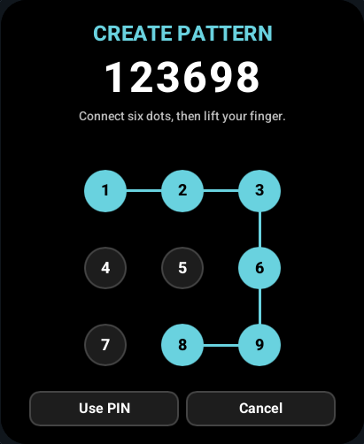
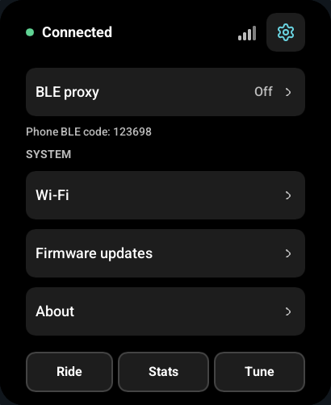

There are two separate credentials: the upstream device passkey used to connect to VESC Express, and your own local PIN or pattern used to protect the display and its phone BLE proxy.
| PIN | Where it comes from | What it controls |
|---|---|---|
| Upstream BLE pairing PIN | The VESC Express or other secured bike BLE device | This display's encrypted connection to that device. |
| Local screen lock | Six-digit code entered as a PIN or six-dot pattern | Local lock screen, supported bike lock requests and the display's phone BLE proxy. |
The upstream pairing PIN never becomes the proxy PIN.
Set or change the screen lock
Open Settings > Screen lock > Set screen lock and enter the new credential twice. Use Use PIN or Use pattern on the entry screen to choose how to enter it; the display remembers that entry mode in NVS. The entry screen owns this mode choice. Change screen lock and Remove screen lock require the current credential first. There is no default code or recovery-code screen.
Both entry modes use the same six-digit credential. A pattern can be entered numerically using its dot numbers. Codes containing zeroes or repeated digits require PIN entry. Switching entry mode clears only the partial entry; it does not change the credential, reset the retry counter or revoke phone bonds.
A PIN always has six digits and submits automatically on the sixth digit. The backspace icon removes one digit; X clears the current entry. The entered digits are visible in large type.
A pattern always uses six different dots on a 3 × 3 grid. Draw in one continuous gesture, then lift your finger to submit. Crossing directly over an unvisited middle dot includes it automatically, as on Android. Dots cannot be reused; short gestures clear without counting as an incorrect credential. Wrong six-dot patterns and wrong PINs clear for another attempt, with a 30-second cooldown after five failures.

The dots are numbered left to right, top to bottom:
1 2 3
4 5 6
7 8 9
For example, drawing 1 → 3 → 9 → 8 includes 2 and 6 automatically, producing the six-dot sequence 123698. This is also the phone proxy's numeric BLE pairing code.
NVS stores the entry-mode preference and a salted credential digest, preserving existing six-digit PIN records. Plaintext PINs and patterns are not stored or logged. The numeric proxy passkey is held in RAM after setup or successful local unlock. Boot with a configured lock requires local unlock before the secured proxy becomes available.
Lock only the screen
Lock screen protects the local controls without sending a bike lock command. The locked-screen timeout can be 15, 30, 60 or 120 seconds, with 30 seconds as the default.
When it times out, the panel becomes black. Tap once to restore your brightness setting, lift your finger, and enter the PIN or draw the pattern. That first tap cannot activate a hidden control. Partial PIN or pattern input is cleared across sleep and wake.
Lock the bike and screen
When supported, Lock bike and screen requests the package's explicit LOCK command. The bike must have fresh stationary telemetry, no controller fault and a ready exclusive connection. The screen stays locked while the display waits for matching telemetry from the same connection.
A command being queued is not proof that propulsion is disabled. If the controller does not confirm the state, the interface reports it as unconfirmed. Validate lock behavior on the exact bike firmware before relying on it. The supplied WFB protocol notes do not establish vendor firmware compatibility by themselves.
Pair the phone to the display
Enable Settings > Phone connection > BLE proxy. The active WFB integration advertises as WFB and hides the name editor. Wheel-e and generic VESC use your editable saved BLE name, initially WB Disp. Leaving WFB restores that saved preference without writing a new NVS value. Connect the phone app to the name currently advertised by the display. With a screen lock configured, the proxy requires authenticated BLE pairing using your own credential:
- For a PIN, enter the same six digits on the phone.
- For a pattern, enter its six dot numbers in order, including automatically inserted middle dots.
- After setting up or unlocking, Settings > Phone BLE code shows the exact numeric code to enter. This is a numeric phone pairing prompt even when the display itself unlocks with a pattern.

The proxy stays paused while the display is locked. This policy applies whether the display connects to the bike over BLE, CAN or UART. With no screen-lock credential, the enabled proxy has no PIN requirement.
Successful pairing creates a remembered bond on the phone and display. Changing the credential disconnects old proxy sessions and clears old phone bonds. Switching entry mode for the same credential preserves the bonds. Removing the lock does the same. If the phone retains an old bond, forget the display in the phone's Bluetooth settings and pair again with the current code. Restarting the display preserves valid bonds, but local unlock is still required before the secured proxy is available.
Pair the display to VESC Express
The VESC Express pairing screen always uses numeric entry and hides the mode switch, regardless of the remembered local entry mode. Enter the passkey configured on that device, then press Submit. Entry accepts 1–6 digits representing the BLE passkey range 000000–999999; leading zeroes can be entered or omitted. It never submits automatically on the sixth digit.

This upstream passkey never replaces the display's own proxy code. The upstream bond is remembered independently; the entered passkey itself is cleared after submission and is not saved as a credential. Changing your local PIN or pattern does not change the PIN configured on VESC Express or remove its independent upstream bond.
Keep the security boundaries clear
The local code protects this display's controls and its proxy. It does not prevent another client from talking directly to the bike's separate interface, and it is not a hardware immobilizer. Physical flash access is outside this local access-control mechanism.
See locking internals for implementation details and open work for remaining hardware acceptance checks.